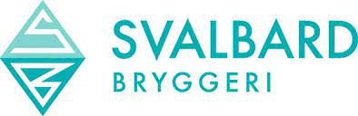

Svalbard Bryggeri
Svalbard Bryggeri는 노르웨이 스발바르 제도 스피츠베르겐 섬의 롱이어비엔에 있는 소규모 양조장이다. 북위 78도에 위치하며 세계에서 가장 북쪽에 있는 상업 양조장으로 알려져 있다.
최종 업데이트

Svalbard Bryggeri는 어떤 브랜드인가
이 양조장은 노르웨이 스발바르 제도 스피츠베르겐 섬의 롱이어비엔에서 맥주를 만드는 소규모 양조장이다. 북위 78도에 자리해 세계에서 가장 북쪽에 있는 상업 양조장으로 알려져 있으며, 위키데이터 기준 본사도 스발바르 제도에 있다.
양조에 쓰는 물의 16%는 2,000년 된 Bogerbreen 빙하에서 나온 얼음을 녹인 물이라는 점이 이 양조장 맥주의 특징이다. Spitsbergen이라는 이름으로 IPA, 페일 에일, 필스너, 스타우트, 바이스비어, 라거, 블론드 등을 내놓는다.
캔 맥주는 노르웨이 본토 전역에 유통되며, 수출이 차지하는 비중도 점차 늘고 있다. 롱이어비엔을 찾는 방문객에게는 맥주 시음도 제공한다.
Svalbard Bryggeri는 어떻게 시작되고 성장했나
위키데이터에 따르면 이 양조장은 2011년에 설립되었고, 본사는 스발바르 제도에 있다. 스발바르 제도에서는 노르웨이 법이 주류의 상업적 생산을 금지하고 있어, 양조장을 세우려면 법 개정이 필요했다.
노르웨이 의회(Storting)가 법을 개정한 뒤에야 현지 생산이 가능해졌다. 이탈리아의 장비 공급업체가 양조 설비를 납품하고 설치했으며, 이를 바탕으로 생산은 2015년에야 시작되었다.
이후 캔 맥주가 노르웨이 본토 전역으로 유통되기 시작했고, 수출 비중도 점차 늘고 있다.
Svalbard Bryggeri의 브랜드 아이덴티티는 무엇인가
북위 78도의 스발바르 제도에서 빙하 녹은 물을 일부 사용해 맥주를 만드는, 세계 최북단의 상업 양조장이라는 점이 다른 양조장과 구분된다.
Svalbard Bryggeri의 대표 제품과 서비스는 무엇인가
대표 제품은 Spitsbergen이라는 이름을 붙인 일곱 가지 맥주 계열이다. 라인업에는 Spitsbergen IPA, Spitsbergen Pale ale, Spitsbergen Pilsner, Spitsbergen Stout가 포함된다.
여기에 Spitsbergen Weißbier, Spitsbergen Rav Lager, Spitsbergen Blonde도 있다. 제품은 캔 맥주 형태로 노르웨이 본토 전역에 유통되며 일부는 수출되고, 양조 용수의 16%는 2,000년 된 Bogerbreen 빙하의 녹은 얼음이다.
롱이어비엔을 방문하는 사람들을 대상으로 한 맥주 시음도 이 양조장이 제공하는 서비스 가운데 하나이다.
Svalbard Bryggeri는 지금 어떤 상태인가
현재 이 양조장은 노르웨이 스발바르 제도의 스피츠베르겐 섬 롱이어비엔에서 운영되는 소규모 양조장이며, 세계 최북단의 상업 양조장으로 꼽힌다. 이곳에서 만든 캔 맥주는 노르웨이 본토 전역에 유통되고 있으며, 수출이 차지하는 비중은 점차 늘어나는 추세이다.
롱이어비엔을 찾는 방문객에게는 맥주 시음 프로그램도 제공한다.
Svalbard Bryggeri 로고는 어떻게 변해왔나
자주 묻는 질문
Svalbard Bryggeri는 어느 나라 브랜드인가요?
Svalbard Bryggeri는 노르웨이의 식음료 브랜드입니다.
Svalbard Bryggeri는 언제 설립되었나요?
Svalbard Bryggeri는 2011년 설립되었습니다.
Svalbard Bryggeri의 브랜드 아이덴티티는 무엇인가요?
북위 78도의 스발바르 제도에서 빙하 녹은 물을 일부 사용해 맥주를 만드는, 세계 최북단의 상업 양조장이라는 점이 다른 양조장과 구분된다.
Svalbard Bryggeri의 대표 제품은 무엇인가요?
대표 제품은 Spitsbergen이라는 이름을 붙인 일곱 가지 맥주 계열이다.
Svalbard Bryggeri는 현재 어떤 상태인가요?
현재 이 양조장은 노르웨이 스발바르 제도의 스피츠베르겐 섬 롱이어비엔에서 운영되는 소규모 양조장이며, 세계 최북단의 상업 양조장으로 꼽힌다.
Svalbard Bryggeri의 본사는 어디에 있나요?
Svalbard Bryggeri의 본사는 스발바르 제도에 있습니다(위키데이터 기준).
Svalbard Bryggeri의 공식 웹사이트는 어디인가요?
Svalbard Bryggeri의 공식 웹사이트는 https://www.svalbardbryggeri.no/ 입니다.
출처와 검증
Svalbard Bryggeri 관련 참고: 공식 웹사이트 · 위키데이터 Q37347386 · 영어 위키백과. 브랜드명은 한글과 원어를 함께 표기하되 데이터에 없는 표기는 만들지 않습니다. 기원 국가·설립연도는 검수된 정의문에서 확인된 값을 우선하고, 없을 때만 공식 웹사이트 URL이 일치하는 위키데이터 개체의 값을 씁니다. 위키데이터 값은 2026-11-09 기준입니다.